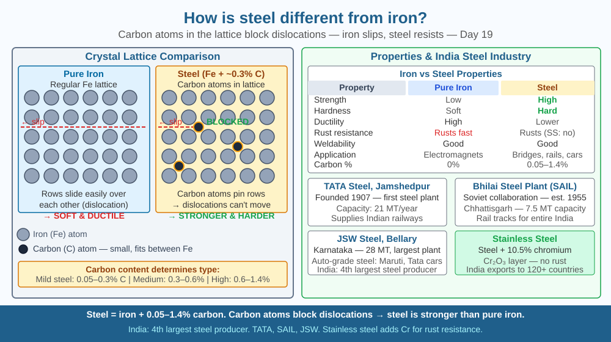

Discover how adding a tiny amount of carbon transforms brittle iron into the structural material that builds bridges, skyscrapers, railway tracks, and spacecraft — and understand why the arrangement of atoms determines everything.
Pure iron is actually not very strong — it bends and deforms relatively easily and rusts quickly. Yet add less than 2% carbon by weight and the resulting material — steel — can hold up a 100-story skyscraper, survive repeated stress as a train wheel, or withstand the pressure of a submarine hull. India's entire infrastructure — the Delhi Metro, Mumbai's sea link, ISRO rocket frames — depends on steel. How can such a tiny amount of carbon make such an enormous difference?
The structure of pure iron:
Iron (Fe) atoms arrange into a body-centred cubic (BCC) lattice at room temperature (called α-iron or ferrite). The lattice has regular gaps (interstitial sites) between atoms.
Dislocations — the key weakness:
Pure iron's weakness comes from dislocations: line defects in the crystal lattice where rows of atoms are misaligned. When stress is applied, dislocations can slide through the lattice easily — this is plastic deformation (bending permanently). The ease of dislocation movement = low strength.
How carbon changes everything:
Carbon atoms (radius 0.077 nm) are much smaller than iron atoms (radius 0.126 nm). When steel is formed: 1. Carbon atoms fit into the interstitial gaps in the iron lattice. 2. They distort the lattice slightly around them. 3. This distortion pins dislocations — they cannot slide as easily. 4. Result: dislocations need much more stress to move → steel is much stronger and harder than iron.
Carbon content and properties:
| Type | Carbon (%) | Properties | Uses |
|---|---|---|---|
| Mild steel | 0.1–0.3% | Strong, ductile, weldable | Construction, car bodies |
| Medium carbon | 0.3–0.6% | Stronger, less ductile | Railway tracks, axles |
| High carbon | 0.6–1.0% | Very strong, brittle | Springs, cutting tools |
| Cast iron | 2–4% | Very brittle, can't weld | Engine blocks, old pipes |
Heat treatment:
The same steel can have different properties depending on how it's cooled: - Quenching (rapid cooling in water/oil): very hard but brittle (martensite structure) - Tempering (reheating after quenching to 200–600°C): reduces brittleness while keeping hardness - Annealing (slow cooling): soft and ductile — easy to shape
Stainless steel:
Adding chromium (>10.5%) to steel creates a thin, invisible Cr₂O₃ layer on the surface that prevents corrosion. Used in surgical instruments, kitchen utensils, and ISRO satellite structures.
Think of the iron lattice as a brick wall. Pure iron is like a wall built without any mortar — the bricks (iron atoms) can slide past each other relatively easily if enough force is applied. Carbon atoms are like small wedges jammed between the bricks. Even though there are very few wedges (less than 2% by weight), each wedge blocks a line of sliding. You don't need to fill every gap — just jam enough wedges (carbon atoms) in the key spots to pin every potential sliding line (dislocation). That's why less than 2% carbon can double or triple the strength.

The diagram shows two side-by-side crystal lattice views: Left (pure iron) — regular BCC lattice with a dislocation line; arrows show the dislocation sliding under stress. Right (steel) — same lattice with small carbon atoms (orange dots) in interstitial gaps; the dislocation is blocked (cannot slide past carbon). Below: a bar chart comparing tensile strength: pure iron ~200 MPa, mild steel ~400 MPa, high-carbon steel ~700 MPa, high-strength alloy steel ~1,400 MPa. A mini-table shows carbon % vs use case. Sidebar: photo of a railway track cross-section showing the profile shape (I-beam) designed for maximum strength.
Compare a new iron nail with a stainless steel nail (or cutlery piece): place both in salt water for 3 days. Observe the iron nail rusting (iron oxide formation) while the stainless steel does not. The difference is the invisible chromium oxide layer on stainless steel. Now try to bend each — the nail bends (ductile mild steel); stainless steel cutlery may be stiffer. You are experiencing the difference in carbon content and alloying directly through your hands.
ISRO's Chandrayaan-3 lunar lander used a titanium alloy (Ti-6Al-4V) for structural frames rather than steel — titanium has similar strength to steel but is 45% lighter. The choice of alloy is the fundamental engineering decision that determines mission success or failure. India has one titanium sponge plant (Kerala Minerals and Metals Ltd in Chavara) that produces the raw titanium metal. At the atomic level, titanium alloys strengthen by the same mechanism as steel — second-phase particles and solute atoms blocking dislocation movement. How does understanding the atomic mechanism allow engineers to design new alloys for new missions?
What makes steel stronger than pure iron?
Why does understanding the iron-carbon structure matter more than knowing steel is stronger?
If too much carbon were added to iron, what would you predict about the resulting material?
A steel cable in a bridge has the following properties: cross-sectional area = 500 mm² = 5 × 10⁻⁴ m², tensile strength = 1,500 MPa = 1.5 × 10⁹ Pa. (a) Calculate the maximum force (in N and kN) the cable can hold before breaking (F = stress × area). (b) Convert to tonnes-force (1 tonne-force = 9,800 N). (c) The Atal Setu bridge has 286 cables. If each bears equal load, what is the total maximum load capacity? (d) With a safety factor of 3 (actual load = max load ÷ 3), what load does each cable actually carry in normal operation? (e) Why is a safety factor important in bridge design?
The ancient Indian metallurgists produced a steel — wootz (also known as Damascus steel) — around 300–400 CE that was stronger and more flexible than anything European metallurgists could make for another 1,400 years. Wootz was made in crucibles in Tamil Nadu and exported across the ancient world. The secret: controlled carbon content (~1.5%) and a slow crystallisation process that created elongated iron carbide (cementite) bands — essentially, ancient Indian smiths were doing materials science by intuition. Modern electron microscopy has only recently revealed the nanostructure of wootz that explains its properties. The technique was lost in the 18th century and was not re-created until the 21st century.
Carbon atoms (0.1–2%) fit into gaps in the iron lattice and block dislocation movement → steel is much stronger than iron. More carbon → harder but more brittle. Heat treatment (quenching/tempering) changes properties. Chromium addition → stainless steel.